PASIVAS
Las habilidades pasivas son 5 habilidades que tiene el personaje que alteran sus estadísticas y diferentes aspectos cuando se activan. Cada jugador tiene 3 pasivas generales y 2 de arquetipo las cuales se deciden nada más obtienes al jugador. Esto aplica a los entrenadores y gerentes, pero a estos se les pueden modificar las pasivas cosa que después explicaré. Este apartado no debería ser muy difícil de entender si ya tienes la base de las estadísticas y los arquetipos. Aclarar que los ídolos son personajes fijos y este apartado no les afecta, a los diamantes les pasa lo mismo por cómo funcionan sus pasivas
-3 Pasivas gerentes y entrenadores
-1 Conceptos
Cuando obtienes a un jugador, este tiene 5 pasivas asignadas de forma permanente. Estas pasivas incluyen las generales y las de arquetipo. En el caso de las gerentes estas son personalizables.
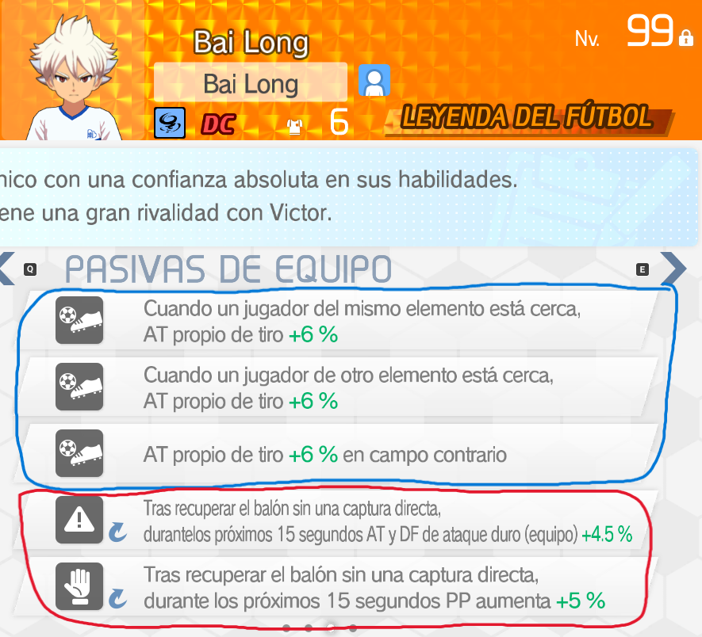
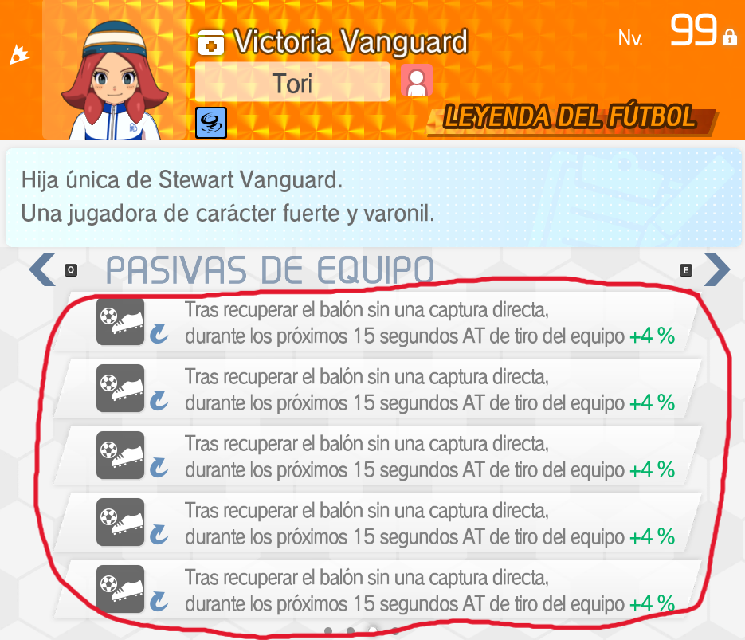
Las pasivas tienen diferentes efectos y si conoces el funcionamiento de las estadísticas y el juego deberías poder encontrar las pasivas adecuadas para lo que quieras. Creo que una de las cosas más importantes de este juego es la libertad para descubrir e integrar cosas en tu equipo así que me voy a limitar a dar los datos y no a dar las pasivas que deberías usar. Las pasivas aumentan su potencia al subir de rareza y se desbloquean todas al subir al personaje de nivel
-2 Buscar pasivas
Si queremos las mejores pasivas, tenemos que saber cómo encontrarlas. El método es muy simple, debes obtener espíritus del personaje e ir invocando hasta obtener el personaje con las pasivas que necesites, solo necesitas dos pasivas óptimas.
Esto es muy sencillo de hacer:
-1 Vamos a plantilla de equipo en el modo crónica
-2 Le damos al equipo
para abrir todas las opciones
-3 Le damos a espíritu
-4 Elegimos el espíritu del personaje que
queremos invocar
-5 Invocamos al personaje
-6 Vemos la pasiva que nos ha tocado
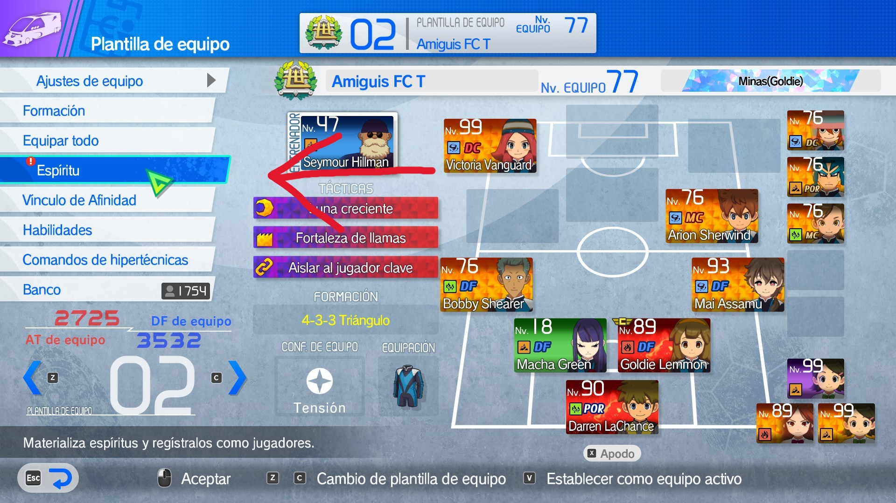
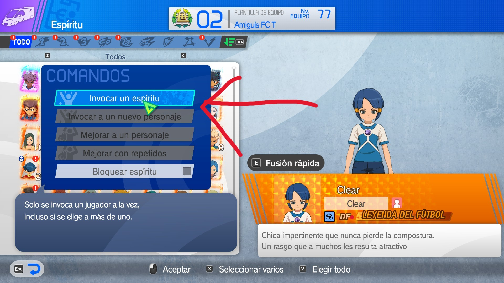
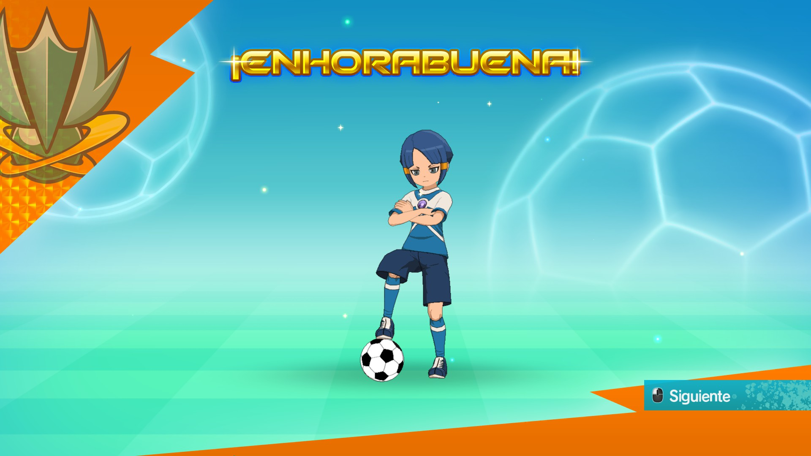
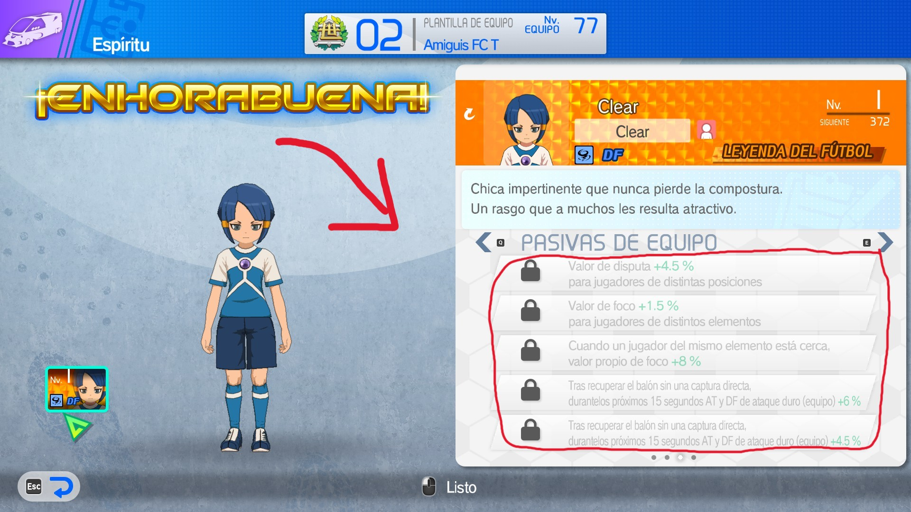
Con esta información ya deberías ser capaz de comenzar a buscar las pasivas que te interesen. Una recomendación, vas a tener que sacar muchas veces a un mismo personaje, no recomiendo retirarlos para que vuelvan a ser espíritus pues igual un personaje de un arquetipo que no te interesaba o algo termina siendo útil en el futuro para algo.
-3 Pasivas gerente y entrenadores
Esta parte es compleja de entender y es justamente la más importante pues las pasivas de gerente y entrenador son las que más marcarán la diferencia en tu equipo. Voy a enseñar paso a paso como crear un gerente/entrenador con pasivas perfectas como la que tengo aquí
Primero de todo, al obtener a un gerente o entrenador tendrá sus pasivas de entrenador/gerente de forma
predetermiada. Necesitamos obtener a estos gerentes/entrenadores para poder trabajar bien con las pasivas.
Ir probando hasta encontrar a un gerente/entrenador con la pasiva de arquetipo que queramos. Una vez lo tengamos, vamos a
añadirlo a un equipo y revisar la tabla de habilidades.
Aquí veremos que su camino va hacia la derecha con una medalla de gerente/entrenador.
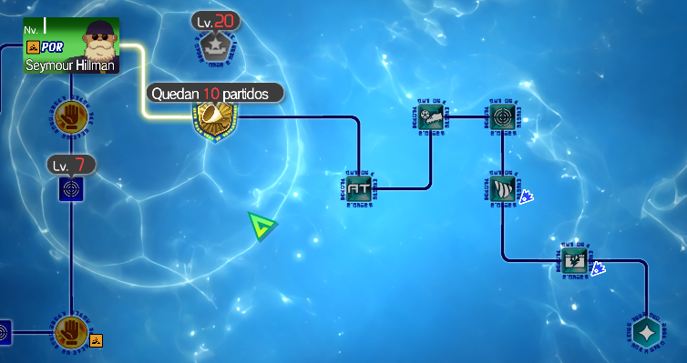
Como podemos ver, en la medalla sale que quedan 10 partidos, ahora lo que queremos hacer es jugar 10 partidos con este entrenador/gerente y subirlo a nivel 30. Haciendo esto desbloquearemos la capacidad de cambiarlo de rol y obtendremos todas sus pasivas.
Una vez hayamos completado esto desbloquearemos la capacidad de cambiar de rol al jugador y si le quitamos y le volvemos a poner su medalla de rol, fijaos en lo que pasa con las pasivas
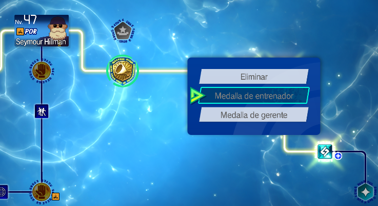
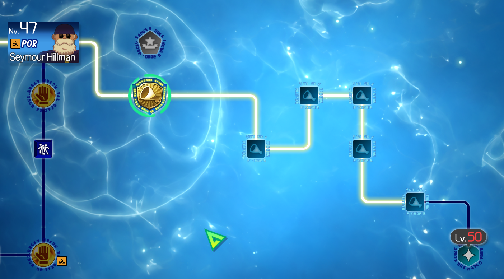
Al haber hecho eso, hemos conseguido las pasivas que el gerente/entrenador tenía y podemos equiparlas libremente a cualquier entrenador/gerente. Eso sí, pasivas de entrenador van en entrenadores y pasivas de gerente van en gerentes.
Con esto el objetivo es maximizar lo que desees de tu equipo. Yo utilizo esto para maximizar la potencia de tiro y gastar el resto en foco pero depende del arquetipo que uses. Recordar que hay un límite de valor máximo en cada pasiva, en el caso del tiro en el arquetipo contraataque es de 100% así que el resto hay que repartirlo en las otras estadísticas. Es un grindeo largo y tedioso de hacer el tema de las pasivas de gerente/entrenador, pero al final del día termina siendo clave para sacar el máximo potencial al equipo.
-4 Pasivas personalizadas
Las pasivas personalizadas no se deben confundir con las pasivas de gerentes/entrenadores, cada jugador tiene un slot para una pasiva personalizada. Estas pasivas no afectan tanto al juego pero sí es importante tenerlas si quieres maximizar la potencia del equipo.
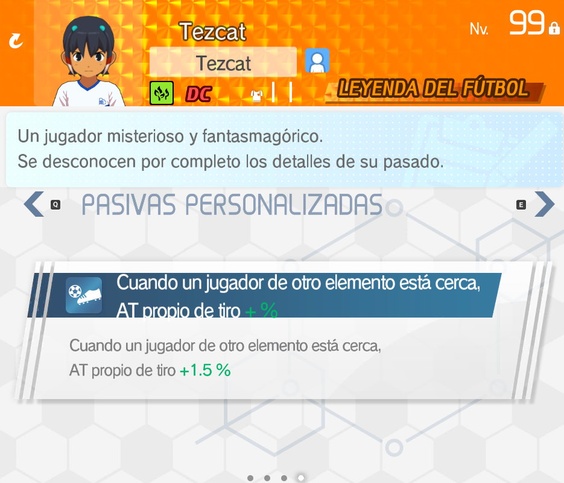
Las pasivas custom se obtienen por medio de los partidos del modo competición. En este modo, puedes enfrentar a los equipos que ya hayas vencido en el modo crónica y en el modo historia y obtener recompensas diferentes a las normales. Dependiendo del partido se obtienen ciertas pasivas, tenéis la información de donde obtenerlas en el siguiente apartado
-5 Herencia de pasivas
Esta es una de las cosas más importantes del team building, pues gracias a esta mecánica ahora solo necesitas que el jugador te venga con dos pasivas perfectas. La herencia de pasivas nos permite trasladar la pasiva de un jugador a otro, eliminando al jugador del que tomamos la pasiva en el proceso. Un jugador puede recibir hasta 3 pasivas heredadas en total y puedes alterar las pasivas de arquetipo del jugador, pero ten en cuenta que las 3 pasivas regulares solo pueden modificar a las 3 regulares y las dos de arquetipo solo modifican a las dos de arquetipo, no puedes tener a un jugador con 5 pasivas de arquetipo o 5 normales.
Para heredar una pasiva necesitas dos cosas, primero un jugador que tenga dos o más pasivas perfectas, porque si no es un desperdicio, y un jugador desechable con la pasiva perfecta que buscamos.
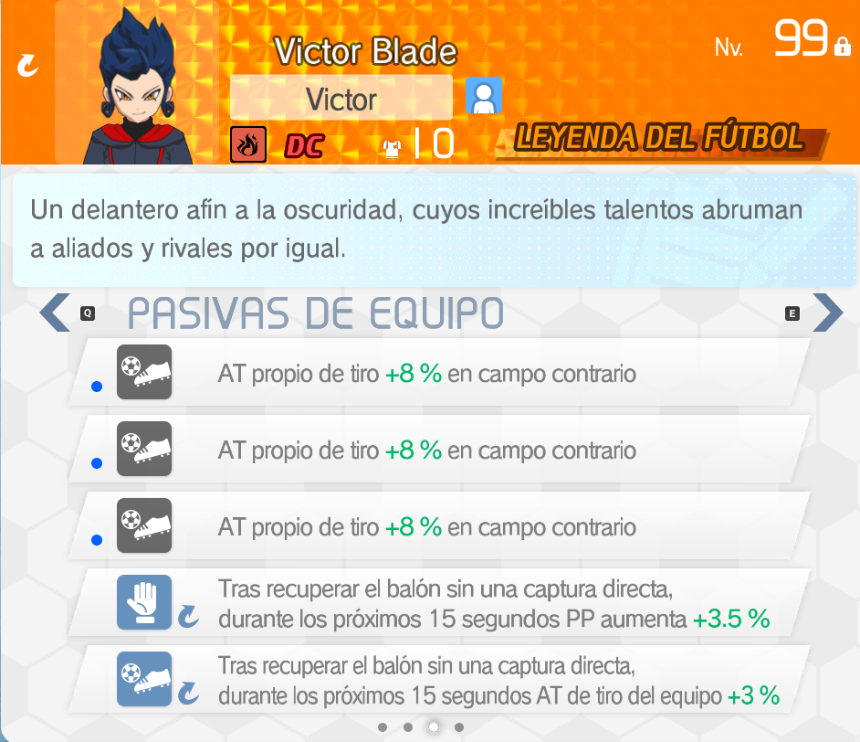
Este es mi Víctor el cual uso en mi equipo principal, como podéis observar las tres primeras pasivas tienen un punto azul, eso es porque son heredadas. Las pasivas de arquetipo las obtuve perfectas, así que solo me faltaba cambiar 3 pasivas para tenerlo perfecto.
Para usar la herencia de pasivas, simplemente pulsa al personaje que quieras que reciba, dale a herencia de pasivas y busca entre tu banco al jugador que quieras que pase la pasiva. Una vez lo tengas simplemente eliges la pasiva y la traspasas. Ten cuidado, porque hay pasivas que pueden tener diferente porcentaje. Por ejemplo, la pasiva de tiro en campo contrario puede ser de 6% u 8% lo cual a la larga puede afectar en algunos casos. Ahora es mucho más sencillo el tema de las pasivas así que merece la pena tomarse algo de tiempo en trabajar esto.
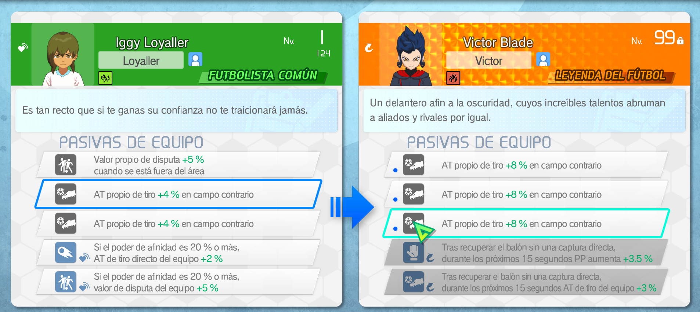
-6 Pasivas óptimas
Ahora bien, dentro de las pasivas obviamente que hay un meta. Dependiendo de la posición, querremos un tipo de pasivas u otro en las regulares. Las pasivas de arquetipo ya las he tratado en la parte de arquetipos, mencionando cuales deberías buscar dependiendo del propósito en los arquetipos meta, es vital entender también las estadísticas en base a las posiciones, porque vamos a usar las pasivas para mejorar las capacidades del jugador en su posición.
Pasivas óptimas delanteros / medio campos ofensivos
Estos jugadores serán los encargados de tirar a puerta y regatear al oponente, entran en el mismo pack de estadísticas importantes.
Para los delanteros queremos solo una pasiva, la pasiva de tiro en campo contrario. Esta nos permite tener un +8% de tiro cuando estemos en el campo contrario lo que marca mucha diferencia.
En caso de los medio campos ofensivos, por lo general en la mayoría de formaciones estos suelen llegar a tirar a puerta, así que tiene sentido tratarlos como delanteros, pero si quieres puedes ponerles la pasiva de aumento de foco en campo contrario, lo que te dará ventaja para regatear.
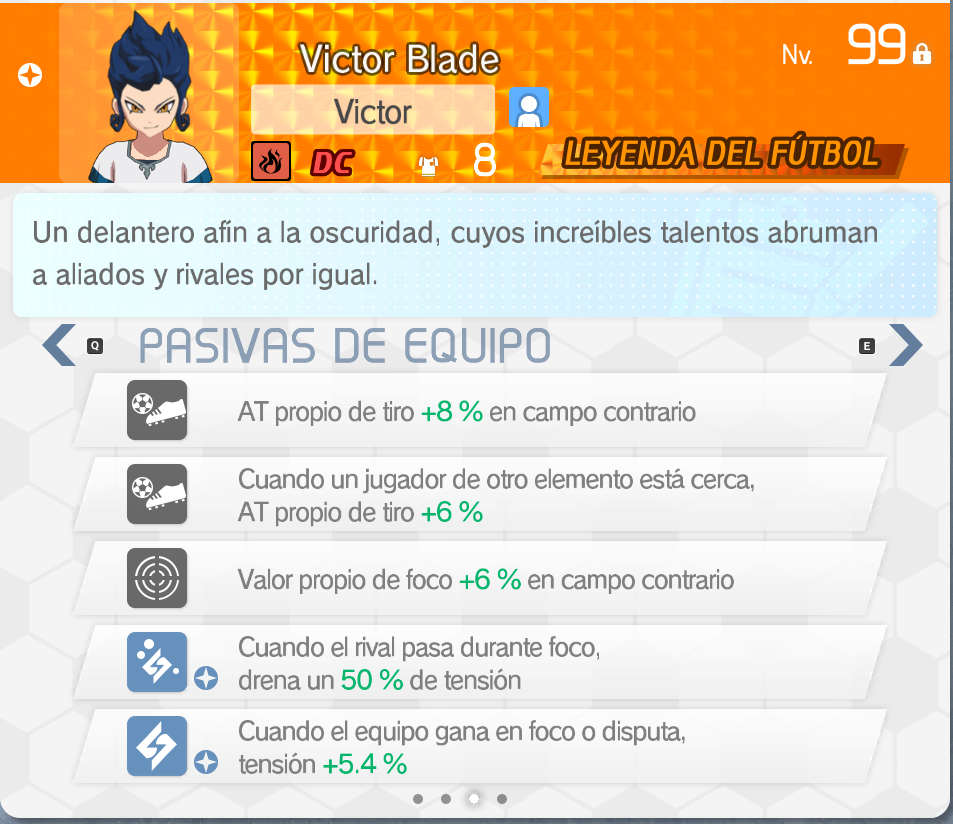
Pasivas óptimas medio campos defensivos / defensas de foco
Estos jugadores se encargarán de detener al rival en duelos de foco, no cambia nada entre ellos prácticamente, aunque igual podrías tratar a los defensas de foco como un híbrido entre defensa de muro y de foco o darles full pasiva de muro, en mi caso los trato como si fueran igual que los medios defensivos.
Para estos queremos la pasiva de aumento de foco en campo propio, su objetivo es parar al rival cuando nos venga así que seguramente estemos en nuestro campo. Con esto podemos tener un +7% de foco propio lo que se aplica a nuestras estadísticas y afecta mucho.
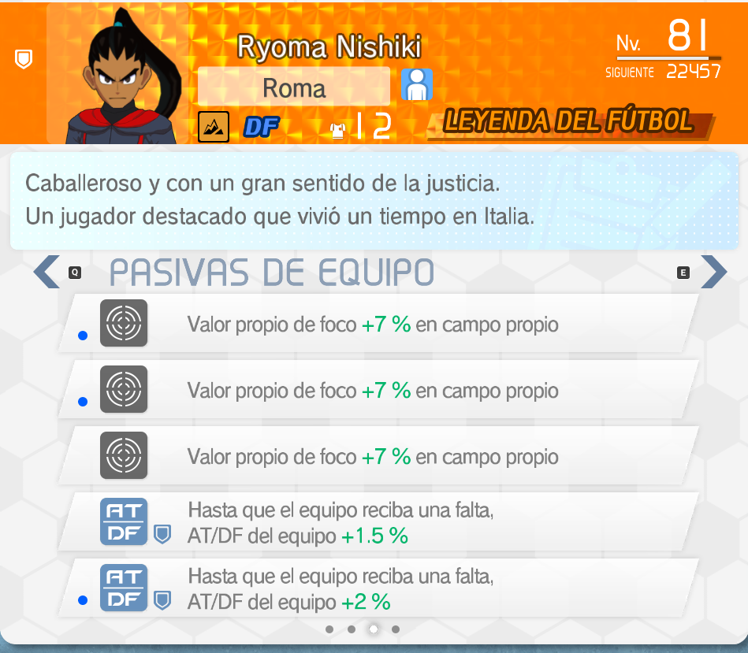
Pasivas óptimas defensas de muro
Estos jugadores se encargan de bloquear tiros enemigos.
Para estos queremos aumentar su potencia de muro, en muchos casos en las formaciones estos están pegados así que puedes ponerlos de diferente elemento y usar la pasiva de aumento de muro con jugador de distinto elemento cerca +5% lo que mejora mucho.
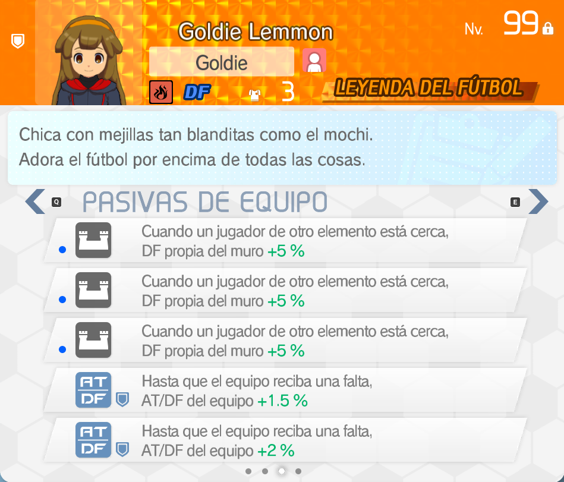
Pasivas óptimas portero
Los porteros son muy directos, sus pasivas no les pueden ayudar, pero sí pueden ayudar a los muros. En este caso queremos priorizar pasivas que aumenten el muro al equipo, en este caso a jugadores de distintos elementos nos sirve. Yo uso tanto la de a jugadores cercanos como a jugadores de distinto elemento, la de jugadores cercanos ha llegado a fallarme a veces y ante tiros largos a veces falla, así que por seguridad en mi Quentin he usado la de distinto / mismo elemento(aún estoy trabajando a mi Quentin)
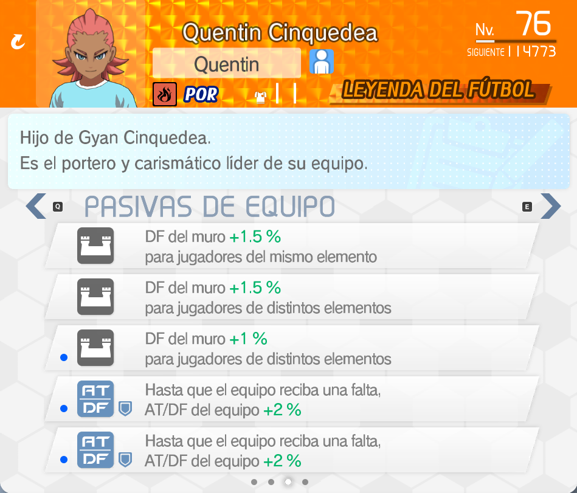
-7 Excel con pasivas
Primero de todo, créditos a Neklioz (@Neklioz en twitter) ya que él montó un bot con información muy útil y gracias a la gente del discord tienen esta información archivada. Yo NO pretendo adueñarme de su trabajo, si no facilitarlo. El excel está en una versión muy temprana solo contando con la ubicación de las pasivas personalizadas y alguna información de otras, pero espero en el futuro poder tener todas las pasivas con sus detalles ahí. Si hay algún error o algo a mejorar, mi twitter está en el apartado inicio, al pulsar la imagen te lleva a mi cuenta. Revisaré regularmente los MDs en caso de que haya algo de utilidad.
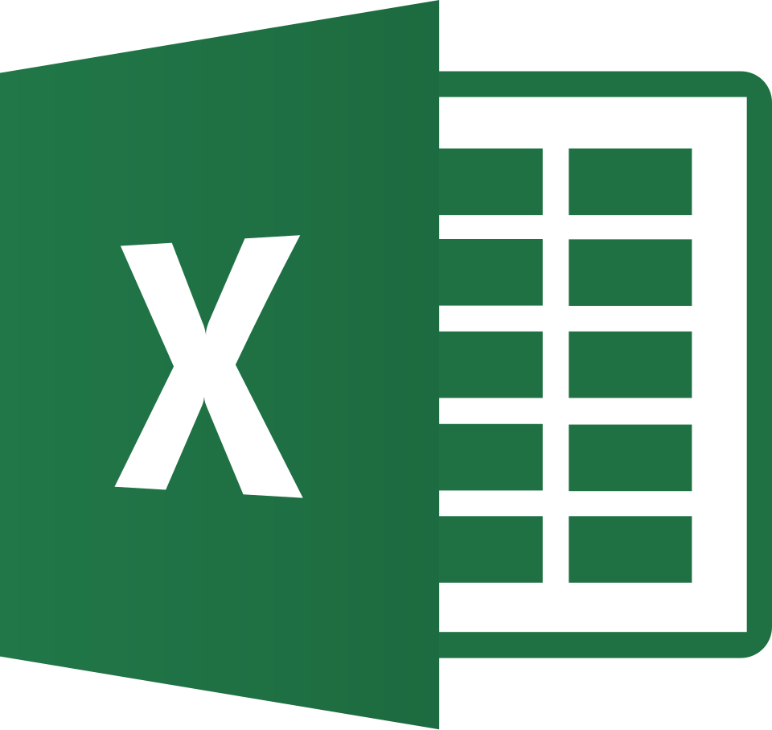